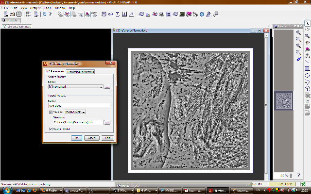
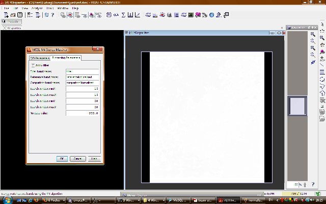

| Stereo-Photogrammetric ATSR Data Analysis | |
The functionality of the MSSL stereo-matcher is broken down into several operators that must be chained together to either retrieve geometric cloud-top height or to determine the co-registration shift in ATSR data. The chain begins with an ATSR data file to produce intermediate target products that serve as source products for the next step.
This section briefly introduces the available operators:
The image normaliser operator implements the normalisation function described in Muller et al. (2007). It takes two input bands, which can be set as processing parameters, and maps these into a three target bands each: a normalised view of the data, a regional standard deviation and a regional mean. For convenience the input bands are copied into the target product.

BEAM showing Image Normaliser operator and result image.
This operator implements a spatial filter to reduce the dataset that will be processed by the stereo-matcher based on the sun-elevation data contained in the ATSR file. If it is desired to process only day-light data, the sun elevation processing parameter could be set to 10.0. This will produce a target product containing a band with the name filter where only values with a higher sun elevation are set to 1. The stereo matching module will ignore data where the value is set to any other value. The use of this operator is not required.
The M4 stereo matcher implements the fast M4 stereo matcher based on phase correlation shift (Muller et al. 2007). It takes as source products the output of the image normaliser and optionally a filter. A filter source product must always be set (a limitation in the BEAM GUI), but is only activated if the Apply filter box is ticked. Other processing parameters include the size of the search window and the value for no data. The target product contains three output bands: YDisparities, containing the disparity in the along-track direction, XDisparities, containing the disparity in the across-track direction, and the match quality. The stereo-matching is the most time consuming task and processing an entire orbit can take as long as one hour on a current personal computer.

BEAM showing M4 Stereo Matcher operator and result image.
The M5 stereo matcher implements a stereo-matcher very similar to M4, but with an exhaustive search within the search window. The same processing parameters as with M4 apply.
This operator translates along-track disparities into geometric cloud-top height using the Mannstein camera model (Denis et al. 2007). Processing parameters are minimum and maximum cloud-top height, a disparity offset to compensate for a shift in co-registration, and the instrument half-cone angle.

BEAM showing Mannstein Camera Model operator and result image.
This operator assists in the detection of the co-registration shift by masking out all areas that are either over sea or cloudy. As the stereo-matching process is affected by clouds in the vicinity of the pixel analysed the processing parameter cloud radius gives the radius of cloud-free pixels required to classify a pixel as clear.

BEAM showing Clear Land operator and result image.
When determining the co-registration shift expected disparities or parallax arising from terrain must be taken into account. This operator computes the expected parallax based on the assumption that every 800m of elevation will result in a one pixel disparity.
This operator takes three source products: disparities resulting from one of the stereo matchers (M4 or M5), a viewfilter (e.g. clear land filter) and expected disparities and computes an output band of elevation corrected disparities, which should give an indication of the image shift present between nadir and forward view.